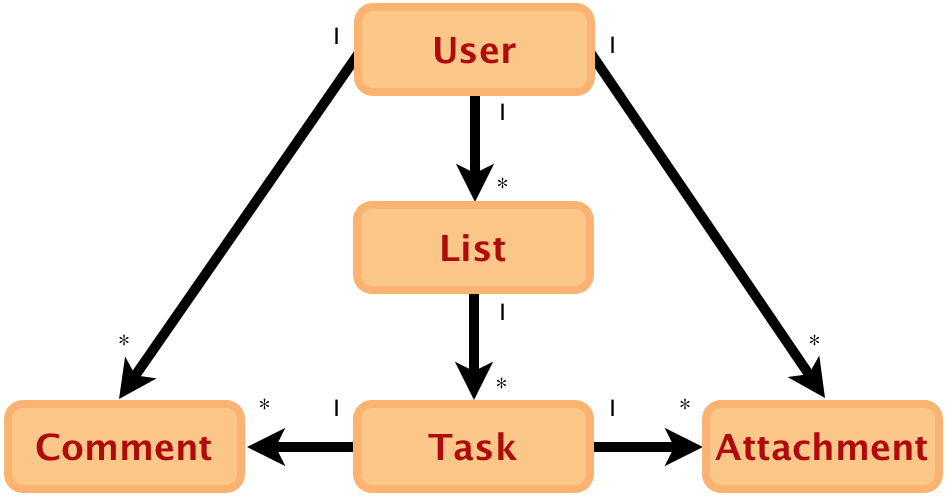

Backbone.js doesn’t prescribe a way to define associations between models, so we need to get creative and use the power of JavaScript to set up associations in such a way that its usage is natural.
Setting up a belongs_to association in Backbone is a two step process. Let’s
discuss setting up the association that may occur between a task and a user.
The end result of the approach is a Task instance having a property called
user where we store the associated User object.
To set this up, let’s start by telling Rails to augment the task’s JSON representation to also send over the associated user attributes:
class Task < ActiveRecord::Base
belongs_to :user
def as_json(options = nil)
super((options || {}).merge(include: { user: { only: [:name, :email] } }))
end
end
This means that when Backbone calls fetch() for a Task model, it will
include the name and email of the associated user nested within the task JSON
representation. Something like this:
{
"title": "Buy more Cheeseburgers",
"due_date": "2011-03-04",
"user": {
"name": "Robert McGraffalon",
"email": "bobby@themcgraffalons.com"
}
}
Now that we receive user data with the task’s JSON representation, let’s tell our Backbone User model to store the User object. We do that on the task’s initializer. Here’s a first cut at that:
var Task = Backbone.Model.extend({
initialize: function() {
this.user = new User(this.get('user'));
}
});
We can make a couple of improvements to the above. First, you’ll soon realize
that you might be setting the user outside of the initialize as well. Second,
the initializer should check whether there is user data in the first place. To
address the first concern, let’s create a setter for the object. Backbone
provides a handy function called has that returns true or false depending on
whether the provided attribute is set for the object:
var Task = Backbone.Model.extend({
initialize: function() {
if (this.has('user')) {
this.setUser(new User(this.get('user')));
}
},
setUser: function(user) {
this.user = user;
}
});
The final setup allows for a nice clean interface to a task’s user, by accessing the task property of the user instance.
var task = Task.fetch(1);
console.log(task.get('title') + ' is being worked on by ' + task.user.get('name'));
You can take a similar approach to set up a has_many association on the
client side models. This time, however, the object’s property will be a
Backbone collection.
Following the example, say we need access to a user’s tasks. Let’s set up the JSON representation on the Rails side first:
class User < ActiveRecord::Base
has_many :tasks
def as_json(options = nil)
super((options || {}).merge(include: { tasks: { only: [:body, :due_date] } }))
end
end
Now, on the Backbone User model’s initializer, let’s call the setTasks
function:
var User = Backbone.Model.extend({
initialize: function() {
var tasks = new Tasks.reset(this.get('tasks'));
this.setTasks(tasks);
},
setTasks: function(tasks) {
this.tasks = tasks;
}
});
Note that we are setting the relation to an instance of the Tasks collection.
TODO: Let’s exapnd upon this, as it isn’t the most flexible solution. (It is
a good start.) We are setting the JSON representation of the Rails models to
suit the Backbone.js concerns. Additionally, the Task#as_json method at the
top is concerned with the User JSON representation. It should at least delegate
to User#as_json. Going further, the JSON presentation for consumption by
Backbone.js should be completely extracted into the JSON API endpoint controller
action, or even a separate presenter class.
TODO: Some of this is repeated in the model_relationships section, unify.
When using our Backbone models and collections, it’s often handy to filter the collections by reusable criteria, or sort them by several different criteria.
To filter a Backbone.Collection, like with Rails named scopes, define
functions on your collections that filter by your criteria, using the select
function from Underscore.js, and return new instances of the collection class. A
first implementation might look like this:
var Tasks = Backbone.Collection.extend({
model: Task,
url: '/tasks',
complete: function() {
var filteredTasks = this.select(function(task) {
return task.get('completed_at') !== null;
});
return new Tasks(filteredTasks);
}
});
Let’s refactor this a bit. Ideally, the filter functions will reuse logic already defined in your model class:
var Task = Backbone.Model.extend({
isComplete: function() {
return this.get('completed_at') !== null;
}
});
var Tasks = Backbone.Collection.extend({
model: Task,
url: '/tasks',
complete: function() {
var filteredTasks = this.select(function(task) {
return task.isComplete();
});
return new Tasks(filteredTasks);
}
});
Going further, notice that there are actually two concerns in this function.
The first is the notion of filtering the collection, and the other is the
specific filtering criteria (task.isComplete()).
Let’s separate the two concerns here, and extract a filtered function:
var Task = Backbone.Model.extend({
isComplete: function() {
return this.get('completed_at') !== null;
}
});
var Tasks = Backbone.Collection.extend({
model: Task,
url: '/tasks',
complete: function() {
return this.filtered(function(task) {
return task.isComplete();
});
},
filtered: function(criteriaFunction) {
return new Tasks(this.select(criteriaFunction));
}
});
We can extract this function into a reusable mixin, abstracting the Tasks
collection class using this.constructor:
var FilterableCollectionMixin = {
filtered: function(criteriaFunction) {
return new this.constructor(this.select(criteriaFunction));
}
};
var Task = Backbone.Model.extend({
isComplete: function() {
return this.get('completed_at') !== null;
}
});
var Tasks = Backbone.Collection.extend({
model: Task,
url: '/tasks',
complete: function() {
return this.filtered(function(task) {
return task.isComplete();
});
}
});
_.extend(Tasks.prototype, FilterableCollectionMixin);
The FilterableCollectionMixin, as we’ve written it, will produce a filtered
collection that does not update when the original collection is changed. To do
so, bind to the change, add, and remove events on the source collection,
reapply the filter function, and repopulate the filtered collection:
var FilterableCollectionMixin = {
filtered: function(criteriaFunction) {
var sourceCollection = this;
var filteredCollection = new this.constructor;
var applyFilter = function() {
filteredCollection.reset(sourceCollection.select(criteriaFunction));
};
this.bind("change", applyFilter);
this.bind("add", applyFilter);
this.bind("remove", applyFilter);
applyFilter();
return filteredCollection;
}
};
The simplest way to sort a Backbone.Collection is to define a comparator
function. This functionality is built in:
var Tasks = Backbone.Collection.extend({
model: Task,
url: '/tasks',
comparator: function(task) {
return task.dueDate;
}
});
If you’d like to provide more than one sort order on your collection, you can
use an approach similar to the filtered function above, and return a new
Backbone.Collection whose comparator is overridden. Call sort to update
the ordering on the new collection:
var Tasks = Backbone.Collection.extend({
model: Task,
url: '/tasks',
comparator: function(task) {
return task.dueDate;
},
byCreatedAt: function() {
var sortedCollection = new Tasks(this.models);
sortedCollection.comparator = function(task) {
return task.createdAt;
};
sortedCollection.sort();
return sortedCollection;
}
});
Similarly, you can extract the reusable concern to another function:
var Tasks = Backbone.Collection.extend({
model: Task,
url: '/tasks',
comparator: function(task) {
return task.dueDate;
},
byCreatedAt: function() {
return this.sortedBy(function(task) {
return task.createdAt;
});
},
byCompletedAt: function() {
return this.sortedBy(function(task) {
return task.completedAt;
});
},
sortedBy: function(comparator) {
var sortedCollection = new Tasks(this.models);
sortedCollection.comparator = comparator;
sortedCollection.sort();
return sortedCollection;
}
});
And then into another reusable mixin:
var SortableCollectionMixin = {
sortedBy: function(comparator) {
var sortedCollection = new this.constructor(this.models);
sortedCollection.comparator = comparator;
sortedCollection.sort();
return sortedCollection;
}
};
var Tasks = Backbone.Collection.extend({
model: Task,
url: '/tasks',
comparator: function(task) {
return task.dueDate;
},
byCreatedAt: function() {
return this.sortedBy(function(task) {
return task.createdAt;
});
},
byCompletedAt: function() {
return this.sortedBy(function(task) {
return task.completedAt;
});
}
});
_.extend(Tasks.prototype, SortableCollectionMixin);
Just as with the FilterableCollectionMixin before, the
SortableCollectionMixin should observe its source if updates are to propagate
from one collection to another:
var SortableCollectionMixin = {
sortedBy: function(comparator) {
var sourceCollection = this;
var sortedCollection = new this.constructor;
sortedCollection.comparator = comparator;
var applySort = function() {
sortedCollection.reset(sourceCollection.models);
sortedCollection.sort();
};
this.on("change", applySort);
this.on("add", applySort);
this.on("remove", applySort);
applySort();
return sortedCollection;
}
};
The server is the authoritative place for verifying whether data that being stored is valid. Even though backbone.js exposes an API for performing client side validations, when it comes to validating user data in a backbone.js application we want to continue to use the very same mechanisms on the server side that we’ve used in Rails all along: the ActiveModel validations API.
The challenge is tying the two together: letting your ActiveRecord objects reject invalid user data, and having the errors bubble up all the way to the interface for user feedback - and having it all be seamless to the user and easy for the developer.
Let’s wire this up. To get started, we’ll add a validation on the task’s title attribute on the ActiveRecord model like so:
class Task < ActiveRecord::Base validates :title, presence: true end
On the backbone side of the world, we have a Backbone task called YourApp.Models.Task:
YourApp.Models.Task = Backbone.Model.extend({
urlRoot: '/tasks'
});
We also have a place where users enter new tasks - just a form on the task list.
<form>
<ul>
<li class="task_title_input">
<label for="title">Title</label>
<input id="title" maxlength="255" name="title" type="text">
</li>
<li>
<button class="submit" id="create-task">Create task</button>
</li>
</ul>
</form>
On the NewTask backbone view, we bind the button’s click event to a new
function that we’ll call createTask.
YourApp.Views.NewTask = Backbone.View.extend({
events: {
"click #create-task": "createTask"
},
createTask: {
// grab attribute values from the form
// storing them on the attributes hash
var attributes = {};
_.each(this.$('form input, form select'), function(element) {
var element = $(element);
if(element.attr('name') != "commit") {
attributes[element.attr('name')] = element.val();
}
});
var self = this;
// create a new task and save it to the server
new YourApp.Models.Task(attributes).save({
success: function() { /* handle success */ }
error: function() { /* validation error occurred, show user */ }
});
return false;
}
})
This gets the job done, but let’s introduce a new class to handle extracting attributes from the form so that it’s decoupled from this view and it’s therefore easier to extend and reuse.
We’ll call this the FormAttributes, and its code is like follows:
FormAttributes = function(form) {
this.form = form;
}
_.extend(FormAttributes.prototype, {
attributes: function() {
var attributes = {};
_.each($('input, select', form), function(element) {
var element = $(element);
if(element.attr('name') != "commit") {
attributes[element.attr('name')] = element.val();
}
});
return attributes;
}
});
With this class in place, we can rewrite our form submit action to:
YourApp.Views.NewTask = Backbone.View.extend({
events: {
"click #create-task": "createTask"
},
createTask: {
var attributes = new FormAttributes(this.$('form')).attributes();
var self = this;
// create a new task and save it to the server
new YourApp.Models.Task(attributes).save({
success: function() { /* handle success */ }
error: function() { /* validation error occurred, show user */ }
});
return false;
}
})
When you call save() on a backbone model, Backbone will delegate to .sync()
and create a POST request on the model’s URL where the payload are the
attributes that you’ve passed onto the save() call.
The easiest way to handle this in Rails is to use respond_to/respond_with available in Rails 3 applciations:
class TasksController < ApplicationController
respond_to :json
def create
task = Task.create(params)
respond_with task
end
end
When the task is created successfully, Rails will render the show action using the object that you’ve passed to the respond_with call, so make sure the show action is defined in your routes:
resources :tasks, only: [:create, :show]
When the task cannot be created successfully because some validation constraint is not met, the the Rails responder will render the model’s errors as a JSON object, and use an HTTP status code of 422, which will alert backbone that there was an error in the request and it was not processed.
The response from Rails in that case looks something like this:
{ "title": ["can't be blank"] }
So that two line action in a Rails controller is all we need to talk to our backbone models and handle error cases.
Back to the backbone model’s save() call, Backbone will invoke one of two
callbacks when it receives a response from the rails app, so we simply pass in
a hash containing a function to run both for the success and the error cases.
In the success case, we may want to add the new model instance to a global collection of tasks. Backbone will trigger the add event on that collection, so there’s your chance for some other view to bind to that event and rerender itself so that the new task appears on the page.
In the error case, however, we want to display inline errors on the form. When
backbone triggers the error callback, it passes along two parameters: the
model being saved and the raw response. We have to parse the JSON response and
iterate through it rendering an inline error on the form corresponding to each
of the errors. Let’s introduce a couple of new classes that will help along the
way.
First off is the ErrorList. An ErrorList encapsulates parsing of the raw
JSON that came in from the server and provides an iterator to easily loop
through errors:
ErrorList = function (response) {
if (response && response.responseText) {
this.attributesWithErrors = JSON.parse(response.responseText);
}
};
_.extend(ErrorList.prototype, {
each: function (iterator) {
_.each(attributesWithErrors, iterator);
},
size: function() {
return _.size(attributesWithErrors);
}
});
Next up is the ErrorView, who’s in charge of taking the Errorlist and
appending each inline error in the form, providing feedback to the user that
their input is invalid.
ErrorView = Backbone.View.extend({
initialize: function() {
_.bindAll(this, "renderError");
},
render: function() {
this.$(".error").removeClass("error");
this.$("p.inline-errors").remove();
this.options.errors.each(this.renderError);
},
renderError: function(errors, attribute) {
var errorString = errors.join(", ");
var field = this.fieldFor(attribute);
var errorTag = $('<p>').addClass('inline-errors').text(errorString);
field.append(errorTag);
field.addClass("error");
},
fieldFor: function(attribute) {
return $(this.options.el).find('[id*="_' + attribute + '_input"]').first();
}
});
Note the fieldFor function. It expects a field with an id containing a
certain format. Therefore, in order for this to work the form’s HTML must
contain a matching element. In our case, it was the list item with an id of
task_title_input.
When a backbone view’s el is already on the DOM, we need to pass it into the
view’s constructor. In the case of the ErrorView class, we want to operate on
the view that contains the form that originated the errors.
To use these classes, we take the response from the server and pass that along
to the ErrorList constructor, which we then pass to the ErrorView that will do
it’s fine job in inserting the inline errors when we call render() on it.
Putting it all together, our save call’s callbacks now look like this:
var self = this;
var model = new YourApp.Models.Task(attributes);
model.save({
error: function(model, response) {
var errors = new ErrorList(response);
var view = new ErrorView( { el: self.el, errors: errors } );
view.render();
}
});
Here we’ve shown how you can decouple different concerns into their own classes, creating a system that is easier to extend, and potentially arriving at generic enough solutions to be even shared across applications. Our simple FormAttributes class has a long way to go. It can grow up to handle many other cases such as dates.
One example of a generic library that handles much of what we’ve done here, as well as helpers for rendering the forms, is Backbone.Form. In order to know how to render all attributes of a model, it requires you to specify a "schema" on the model class - and it will take it from there. The source for Backbone.Form can be found on github.
In any non-trivial application, you will have relationships in your domain model that are valuable to express on the client side. For example, consider a contact management application where each person in your contact list has many phone numbers, each of a different kind.
Or, consider a project planning application where there are Teams, Members, and Projects as resources (models and collections). There are relationships between each of these primary resources, and those relationships in turn may be exposed as first-class resources: a Membership to link a Team and a Member, or a Permission to link a Team with a Project. These relationships are often exposed as first-class models so they can be created and destroyed the same way as other models, and so that additional domain information about the relationship, such as a duration, rate, or quantity, can be described.
These model relationships don’t have to be persisted by a relational database. In a chatroom application whose data is persisted in a key-value store, the data could still be modeled as a Room which has many Messages, as well as Memberships that link the Room to Users. A content management application that stores its data in a document database still has the notion of hierarchy, where a Site contains many Pages, each of which is constitutes of zero or more Sections.
In a vanilla Rails application, the object model is described on the server side with ActiveRecord subclasses, and exposed to the Backbone.js client through a JSON HTTP API. You have a few choices to make when designing this API, largely focused on the inherent coupling of model relationships and data — when you handle a request for one resource, which of its associated resources (if any) do you deliver, too?
Then, on the client side, you have a wide degree of choice in how to model the relationships, when to eagerly pre-fetch associations and when to lazily defer loading, and whether to employ a supporting library to help define your model relationships.
In the example application, there are Users which have many Tasks through Lists. Each Task has many Comments and Attachments.
|  |
Before you decide how to model your JSON API or how to declare, your client-side model relationships, step back and consider the user experience of your application. For TaskApp, we decided to have interactions as follows:
- A user signs up or logs in
- The user is directed to their dashboard
- The dashboard shows all lists and the tasks on each list, but not the comments or attachments.
- When a user views the details of an individual task, the comments and attachments for that task are displayed.
This leads us to see that the Lists and Tasks for a user are used immediately upon navigating to the dasboard, but the Comment and Attachment data for a Task are not needed upon initial page load, and are possibly never needed at all.
Let’s say that we are also planning for the user to have continuous network access, but not to necessarily have a high speed connection. Also, users tend to view their lists of tasks frequently, but rarely view the comments and attachments.
Based on this, we will bootstrap the collections of Lists and Tasks inside the dashboard, and defer loading of associated Comments and Attachments until after the user clicks through to a task.
We could have selected from several other alternatives, including:
- Don’t preload any information, and deliver only static assets (HTML, CSS, JS) on the dashboard request. Fetch all resources over separate XHR calls. This can provide for a faster initial page load, at the cost of a longer time to actual interactivity: although the byte size of the page plus data is roughly the same, the overhead of additional HTTP requests incurs the extra load time.
- Preload all the information, including Comments and Attachments. This would work well if we expected users to frequently access the comments and attachments of many tasks.
- Use localStorage as the primary storage engine, and sync to the Rails server in the background. This would be advantageous if we expected network access to be intermittent, although it incurs the additional complexity of having to resolve conflicts on the server if two clients submit conflicting updates.
Now that we know we’ll bootstrap the Lists and Tasks and defer the Comments and Associations, we should decide how to deliver the deferred content. We have two options here. Our goal is to fetch to comments and attachments for an individual task.
One way we could approach this is the issue separate API calls for each nested resource:
$ curl http://tasksapp.local:3000/tasks/78/comments.json | ppjson
[
{
"id": 208,
"user_id": 3,
"body": "What do you think of this mock? (See attachment)"
},
{
"id": 209,
"user_id": 1,
"body": "Looks great! I'll implement that."
}
]
$ curl http://tasksapp.local:3000/tasks/78/attachments.json | ppjson
[
{
"id": "32",
"file_url": "https://s3.amazonaws.com/tasksapp/uploads/32/mock.png"
}
]
Note
We will authenticate API requests with cookies, just like normal user login, so the actual curl request would need to include a cookie from a logged in user.
This approach has the advantage of adhering more to convention, and requiring less code in both the server-side JSON presentation and the client-side JSON parsing. Its disadvantage is performance: to fetch a task’s associated data, we need to send 2 HTTP requests. When more kinds of associated resources are added in the future, the number of requests will increase.
Another way we could approach this is to embed the comment and attachment data in
the JSON representation of an individual task, and deliver this data from the
/tasks/:id endpoint:
$ curl http://tasksapp.local:3000/tasks/78.json | ppjson
{
/* some attributes left out for clarity */
"id": 78,
"user_id": 1,
"title": "Clean up landing page",
"comments": [
{
"id": 208,
"user_id": 3,
"body": "What do you think of this mock? (See attachment)"
},
{
"id": 209,
"user_id": 1,
"body": "Looks great! I'll implement that."
}
],
"attachments": [
{
"id": "32",
"upload_url": "https://s3.amazonaws.com/tasksapp/uploads/32/mock.png"
}
]
}
This approach involves additional code in both producing the JSON on the server side and parsing the JSON on the client side. We’ll take this approach for the example application, both because it requires fewer HTTP requests and because it’s a more interesting example and illustrates the technique of parsing nested models in Backbone.js.
Now that we know we’ll bootstrap the Lists and Tasks and defer the Comments and Attachments, we know that our HTTP JSON API should support at least the following Rails routes:
resources :lists, :only => [:create, :update, :delete] resources :tasks, :only => [:show, :create, :update, :delete]
Tip
In some applications, you choose to expose a user-facing API. It’s often valuable to dogfood this endpoint by making use of it from your own Backbone code. Often these APIs will be scoped under an "/api" namespace, possibly with an API version namespace as well.
For building the JSON presentation, we have a few options. Rails already comes
with support for overriding the Task#as_json method, which is probably
the easiest thing to do. However, logic regarding the JSON representation of
a model is not necessarily the model’s concern. Furthermore, the as_json API
starts to fall appart when representing complex hierarchies. Other approaches
such as creating a separate presenter object, or writing a builder-like view are
all better approaches because additionally we don’t pollute our models with
presentational logic.
The RABL rubygem is a good generalization of the problem and can help with this particular aspect of your API implementation.
RABL allows you to create templates where you can easily specify the JSON
representation of your models. If you’ve worked with the great builder
library to generate arbitrary XML, such as an RSS feed, you’ll feel right at
home.
To use it, first include the rabl and yajl-ruby gems in your Gemfile. Then
you can create a view ending with .json.rabl to handle any particular request.
For example, a tasks#show action and views may look like this:
class TasksController < ApplicationController
respond_to :json
def show
@task = Task.find(params[:id])
respond_with @task
end
end
Rails responders will first look for a template matching the controller/action
with the format in the file name, in this case json. If it doesn’t find it,
it will invoke to_json on the @task model, but in this case we are providing
one in app/views/tasks/show.json.rabl, so it will render that instead:
object @task
attributes(:id, :title, :complete)
child(:user) { attributes(:id, :email) }
Now it is much easier to extend and tweak the JSON generated on the server, while still keeping the model free of presentational behavior. Do look at the project’s readme for all the bells and whistles.
TODO: Expand outline
Outline: Discuss overriding Backbone Model parse() function. Talk about how parsing fits into the fetch/new object lifecycle. Point out inconsistencies (parse not invoked during reset, only fetch/set etc) Discuss https://github.com/PaulUithol/Backbone-relational
TODO: If a Backbone Task doesn’t always have its associations filled (e.g. when
rendering the TasksIndex Backbone view, whose JSON is built by bootstrapping, in
Tasks#index), when you move from TasksIndex to TasksShow, you need to invoke
task.fetch() to pull all the task attributes from GET /tasks/:id and populate
the associations. Whose concern is that? Presumably the TaskShow view. You
could discuss lazily populating this by making the task associations functions
instead of properties (compare task.attachments.each to task.attachments().each;
in the latter, you could lazily fetch and populate, but then you run into the
issue that fetch is async.)
When you’re building a multi-tier application where business logic is spread across tiers, one big challenge you face is to avoid duplicating that logic across tiers. There is a tradeoff here, between duplication and performance. It’s desirable to have one and only one implementation of a particular concern in your domain, but it’s also desirable for your application to perform responsively.
For example, let’s say that a user must have an email address.
At one end of the scale, there is no duplication: all business logic is defined
in one tier, and other tiers access the logic by remote invocation. Your Rails
Member model provides a validation:
class Member < ActiveRecord::Base validate :email, :presence => true end
The Backbone view attempts to persist the Member as usual, binding to its
error event to handle the server side error:
var MemberFormView = Backbone.View.extend({
events: {
"submit form": "submit"
},
initialize: function() {
_.bindAll(this, "error");
this.model.bind("error", this.error);
},
render: function() {
// render form...
},
submit: function() {
var attributes = new FormSerializer(this.$('form')).attributes();
this.model.save(attributes);
},
error: function(model, errorResponse) {
new ErrorView(errorResponse, this.$('form')).render();
}
});
This uses the ErrorView class which is able to parse the error hash returned
from Rails, which was discussed on the Validations section.
Note
This is also the first time you probably see _.bindAll(), so let’s diverge
briefly to introduce what it is doing.
When an event is triggered, the code invoking the callback is able to set the
javascript context. By calling _.bindAll(this, "error"), we are instead
overriding whatever context it may have been, and setting it to this. This is
necessary so that when we call this.$(form) in the error() callback,
we get the right object back.
Always use _.bindAll when you need to force the javascript context (this)
within a function’s body.
In the case of no duplication, your Backbone Member model does not declare
this validation. An user fills out a form for a creating a new Member in your
application, submits the form, and, if they forgot to include an email address,
a validation message is displayed. The application delegates the entire
validation concern to the server, as we saw in the validations section. TODO:
Link up that reference.
However, round-tripping validation to the server can be too slow in some cases, and we’d like to provide feedback to the end-user more quickly. To do this, we have to implement the validation concern on the client side as well. Backbone provides a facility for validating models during their persistence, so we could write:
var Member = Backbone.Model.extend({
validate: function() {
var errors = {};
if (_.isEmpty(this.get('email'))) {
errors.email = ["can't be blank"];
}
return errors;
}
});
Conveniently, we’ve structured the return value of the validate() function to
mirror the structure of the Rails error JSON we saw returned above. Now, we
could augment the ErrorView class’s constructor function to handle either
client-side or server-side errors:
var ErrorView = function(responseOrErrors, form) {
this.form = $(form);
if (responseOrErrors && responseOrErrors.responseText) {
this.errors = JSON.parse(responseOrErrors.responseText);
} else {
this.errors = responseOrErrors;
}
};
Now, with Backbone, the validate() function is called for each invocation of
set(), so as soon as we set the email address on the Member, its presence is
validated. For the user experience with the quickest response, we could observe
changes on the email form field, updating the model’s email attribute whenever
it changes, and displaying the inline error message immediately.
With ErrorView able to handle either client-side or server-side error messages, we have a server-side guarantee of data correctness, [1] and a responsive UI that can validate the Member email presence without round-tripping to the server.
The tradeoff we’ve made is that of duplication; the concern of "what constituted a valid Member" is written twice — in two different languages, no less. In some cases this is unavoidable. In others, there are mitigation strategies for reducing the duplication, or at least its impact on your code quality and maintainability.
Let’s take a look at what kinds of logic you might find duplicated, and then strategies for reducing duplication.
In Rails applications, our model layer can contain a variety of kinds of business logic:
- Validations - This is pretty straightforward, since there’s a well-defined Rails API for validating ActiveModel classes.
-
Querying - Sorting and filtering fall into this category. Implementations
vary slightly, but are often built with
named_scopeor class methods returningActiveRecord::Relationinstances. Occasionally querying is delegated to class other than the ActiveRecord instance. -
Callbacks - Similar to validations, there’s a well-defined API for callbacks
(or "lifecycle events") on Rails models;
after_createand such. -
Algorithms - Everything else. Sometimes they’re implemented on the
ActiveRecord instances, but are often split out into other classes and used via
composition. One example from commerce apps would be an
Ordersumming the costs of itsLineItems. Or consider an example from an agile project planning application, where aProjectPlanrecalculates aProject's set ofUserStoryobjects into weeklyIterationbucket objects.
There are often other methods on your Rails models, but they either are a mix of
the above categories (a state_machine implementation could be considered a mix
of validations and callback) and other methods that don’t count as business
logic — methods that are actually implementing presentation concerns are a
frequent example.
It’s worth considering each of these categories in turn, and how they can be distributed across client and server to provide a responsive experience.
Validations are probably the lowest-hanging fruit. Since the API for declaring validations is largely declarative and well-bounded, we can imagine providing an interface that introspects Rails models and builds a client-side implementation automatically. Certainly there are cases which aren’t automatable, such as custom Ruby validation code or validations which depend on a very large dataset that would be impractical to deliver to the client (say, a zipcode database). These cases would need to fall back to either an XHR call to the server-side implementation, or a custom-written client-side implementation - a duplicate implementation.
TODO: This is actually what the client_side_validations gem does…
TODO: The csv model branch is a wip for Backbone compliance, pretty neat: https://github.com/bcardarella/client_side_validations/tree/model
TODO: Expand on outline.
Outline: I think it’s possible to establish conventions here, similar to validations, so that server-side scopes can be converted to client-side collection filtering. However, is this valuable? Do you actually often duplicate the same querying (sorting/filter) concerns across client and server?
Also, since this whole discussion is about perf, consider tradeoff of paginating anyways, that’s interesting, so can you reduce duplication and generate code with that too?
TODO: Expand on outline.
Outline: These often depend on server-side persistence, so would you even want them on the client side? Perhaps, e.g. same lifecycle events for the analagous client-side models, but it’s actually likely that your client-side models will differ sufficiently (since they’re in the presentation tier) from server-side models that these concerns won’t be duplicates, so it’s less of a worry.
TODO: Expand on outline.
Outline: General algorithms are often the trickiest. It’s possibly to write the logic in JS and then make that available to Ruby, if you have a REALLY large piece of logic, but weigh the cost of that overhead against the cost of duplicating the logic. At some point it probably makes sense, though. Also consider JS server-side and wrapping that as a webservice for Rails access… would that be easier? Need specific examples to motivate this well.
http://c2.com/cgi/wiki?HalfObjectPlusProtocol http://c2.com/cgi/wiki?HoppPatternLanguage
TODO: The ErrorList/ErrorView implementation here isn’t quite consistent with those in the prior validations chapter. Refactor for consistency or, if that’s inappropriate, do a better job explaining the changes.
A big driving force behind the move to rich client web apps is to improve the user experience. These applications are more responsive and can support more detailed and stateful interactions.
One such interaction involves multiple concurrent users interacting with the same resource in realtime. We can deliver a more seamless experience by propagating users' changes to one another as they take place: when we edit the same document, I see your changes on my screen as you type them. If you’ve ever used Google Docs or Google Wave, you’ve seen this in action.
So, how can we build this functionality into our own applications?
There are a few different pieces that we’ll put together for this. The basic parts are:
- Change events. The fundamental unit of information that we broadcast through our system to keep clients in sync. Delivered as messages, these events contain enough information for any receiving client to update its own data without needing a full re-fetch from the server.
- An event source. With trusted clients, changes can originate directly from the client. More often, however, we will want the server to arbitrate changes so that it can apply authorization, data filtering, and validations.
- A transport layer that supports pushing to clients. The WebSocket API is such a transport, and is ideal for its low overhead and latency.
- Event-driven clients. Clients should be able to react to incoming change events, ideally handling them with incremental UI updates rather than re-drawing themselves entirely. Backbone.js helps out in this department, as your client-side application app is likely already set up to handle such events.
- A message bus. Separating the concern of message delivery from our main application helps it stay smaller and helps us scale our messaging and application infrastructure separately. There are already several great off-the-shelf tools we can use for this.
Revisiting our todo application, we’d like to add the ability to collaborate on todo lists. Different users will be able to work on the same todo list concurrently. Several users can look at the same list; adding, changing, and checking off items.
There are a few technical decisions mentioned previously. For this example, we will:
- Use Rails on the server and Backbone on the client.
-
Use the server as the canonical event source so that clients do not have to trust one another. In particular, we’ll employ an
ActiveRecord::Observerthat observes Rails model changes and dispatches a change event. - Use Faye as the messaging backend, which has Ruby and JavaScript implementations for clients and server. Faye implements the Bayeux protocol, prefers WebSocket for transport (thought it gracefully degrades to long polling, CORS, or JSON-P), and supports a bunch of other goodies like clustering and extensions (inbound- and outbound- message filtering, like Rack middleware).
In our application, there are several connected clients viewing the same todo list, and one user Alice makes a change to an item on the list.
Let’s take a look at the lifecycle of one change event.
TODO: System-partitioned sequence diagram
Setup:
-
An instance of JavaScript class
BackboneSync.FayeSubscriberis instantiated on each client. It is configured with a channel to listen to, and a collection to update. - The Faye server is started.
-
The Rails server is started, and several clients are connected and viewing
#todo_lists/1.
On Alice’s machine, the client responsible for the change:
- Alice clicks "Save" in her view of the list.
- The "save" view event is triggered.
-
The event handler invokes
this.model.save(attributes). -
Backbone.Model.prototype.savecallsBackbone.sync. -
Backbone.syncinvokes$.ajaxand issues an HTTP PUT request to the server.
On the server:
-
Rails handles the PUT request and calls
#update_attributeson an ActiveRecord model instance. -
An
ActiveRecord::Observerobserving this model gets its#after_savemethod invoked. - The observer dispatches a change event message to Faye.
- Faye broadcasts the change event to all subscribers.
On all clients:
-
FayeSubscriberreceives the change event message, likely over a WebSocket. -
The subscriber parses the event message, picking out the event (
update), theidof the model to update, and a new set of attributes to apply. -
The
FayeSubscriberfetches the model from the collection, and callsseton it to update its attributes.
Now all the clients have received the changeset that Alice made.
We’ll need to run Faye to relay messages from publishers to subscribers. For
Rails apps that depend on Faye, I like to keep a faye/ subdirectory under the
app root that contains a Gemfile and config.ru, and maybe a shell script to
start Faye:
$ cat faye/Gemfile source 'http://rubygems.org' gem 'faye' $ cat faye/config.ru require 'faye' bayeux = Faye::RackAdapter.new(:mount => '/faye', :timeout => 25) bayeux.listen(9292) $ cat faye/run.sh #!/usr/bin/env bash BASEDIR=$(dirname $0) BUNDLE_GEMFILE=$BASEDIR/Gemfile bundle exec rackup $BASEDIR/config.ru -s thin -E production $ ./faye/run.sh >> Thin web server (v1.2.11 codename Bat-Shit Crazy) >> Maximum connections set to 1024 >> Listening on 0.0.0.0:9292, CTRL+C to stop
Now that the message bus is running, let’s walk through the server code. The Rails app’s responsibility is this: whenever a Todo model is created, updated, or deleted, publish a change event message.
This is implemented with an ActiveRecord::Observer. We provide the functionality in a module:
module BackboneSync
module Rails
module Faye
mattr_accessor :root_address
self.root_address = 'http://localhost:9292'
module Observer
def after_update(model)
Event.new(model, :update).publish
end
def after_create(model)
Event.new(model, :create).publish
end
def after_destroy(model)
Event.new(model, :destroy).publish
end
end
class Event
def initialize(model, event)
@model = model
@event = event
end
def broadcast
Net::HTTP.post_form(uri, :message => message)
end
private
def uri
URI.parse("#{BackboneSync::Rails::Faye.root_address}/faye")
end
def message
{ :channel => channel,
:data => data }.to_json
end
def channel
"/sync/#{@model.class.table_name}"
end
def data
{ @event => { @model.id => @model.as_json } }
end
end
end
end
end
and then mix it into a concrete Observer class in our application. In this
case, we name it TodoObserver:
class TodoObserver < ActiveRecord::Observer include BackboneSync::Rails::Faye::Observer end
This observer is triggered each time a Rails Todo model is created, updated,
or destroyed. When one of these events happen, the Observer sends along a
message to our message bus, indicating the change.
Let’s say that a Todo was just created:
>> Todo.create(title: "Buy some tasty kale juice") => #<Todo id: 17, title: "Buy some tasty kale juice", created_at: "2011-09-06 20:49:03", updated_at: "2011-09-07 15:01:09">
The message looks like this:
{
"channel": "/sync/todos",
"data": {
"create": {
"17": {
"id": 17,
"title": "Buy some tasty kale juice",
"created_at": "2011-09-06T20:49:03Z",
"updated_at": "2011-09-07T15:01:09Z"
}
}
}
}
Received by Faye, the message is broadcast to all clients subscribing to the
/sync/todos channel, including our browser-side FayeSubscriber objects.
In each browser, we want to connect to the Faye server, subscribe to events on channels that interest us, and update Backbone collections based on those messages.
Faye runs an HTTP server, and serves up its own client library, so that’s easy to pull in:
<script type="text/javascript" src="http://localhost:9292/faye.js"></script>
To subscribe to Faye channels, instantiate a Faye.Client and call subscribe on it:
var client = new Faye.Client('http://localhost:9292/faye');
client.subscribe('/some/channel', function(message) {
// handle message
});
When the browser receives messages from Faye, we want to update a Backbone
collection. Let’s wrap up those two concerns into a FayeSubscriber:
this.BackboneSync = this.BackboneSync || {};
BackboneSync.RailsFayeSubscriber = (function() {
function RailsFayeSubscriber(collection, options) {
this.collection = collection;
this.client = new Faye.Client('<%= BackboneSync::Rails::Faye.root_address %>/faye');
this.channel = options.channel;
this.subscribe();
}
RailsFayeSubscriber.prototype.subscribe = function() {
return this.client.subscribe("/sync/" + this.channel, _.bind(this.receive, this));
};
RailsFayeSubscriber.prototype.receive = function(message) {
var self = this;
return $.each(message, function(event, eventArguments) {
return self[event](eventArguments);
});
};
RailsFayeSubscriber.prototype.update = function(params) {
var self = this;
return $.each(params, function(id, attributes) {
var model = self.collection.get(id);
return model.set(attributes);
});
};
RailsFayeSubscriber.prototype.create = function(params) {
var self = this;
return $.each(params, function(id, attributes) {
var model = new self.collection.model(attributes);
return self.collection.add(model);
});
};
RailsFayeSubscriber.prototype.destroy = function(params) {
var self = this;
return $.each(params, function(id, attributes) {
var model = self.collection.get(id);
return self.collection.remove(model);
});
};
return RailsFayeSubscriber;
})();
Now, for each collection that we’d like to keep in sync, we instantiate a
corresponding FayeSubscriber. Say, in your application bootstrap code:
MyApp.Routers.TodosRouter = Backbone.Router.extend({
initialize: function(options) {
this.todos = new Todos.Collections.TodosCollection();
new BackboneSync.FayeSubscriber(this.todos, { channel: 'todos' });
this.todos.reset(options.todos);
},
// ...
});
Now run the app, and watch browsers receive push updates!
Of course, this introduces a great deal of complexity into your app. There’s a new daemon running on the server (faye), and every client now has to correctly listen on its messages and rerender the appropriate views to show the new data. This gets even more complex when the resource being updated is currently being edited by another user. Your own requirements will ditcate the correct behavior in cases like that, but what’s most important is that you are able to reproduce such workflows in automated tests.
While there is a chapter dedicated to testing Backbone applications, this section describes the tools and approach that will allow you to verify this behavior in tests.
Following an outside-in development approach, we start with an acceptance test and dive into the isolated testing examples when the acceptance tests drive us to them. There’s nothing novel in regards to isolation testing of these components, so we will not touch on them here. Instead, we’ll describe how to write an acceptance test for the above scenario.
The required pieces for the approach are:
- Ensure a faye server running on your testing environment.
- Fire up a browser session using an browser acceptance testing framework.
- Sign in as Alice.
- Start a second browser session and sign in as Olivia.
- Edit some data on Alice’s session.
- See the edited data reflected on Olivia’s session.
We will be using cucumber with Capybara and RSpec for this example.
To ensure the Faye server is running, we merely try to make a connection
to it when cucumber boots, failing early if we can’t connect. Here’s a
small snippet that you can drop in features/support/faye.rb to do
just that:
begin
Timeout.timeout(1) do
uri = URI.parse(BackboneSync::Rails::Faye.root_address)
TCPSocket.new(uri.host, uri.port).close
end
rescue Errno::ECONNREFUSED, Errno::EHOSTUNREACH, Timeout::Error
raise "Could not connect to Faye"
end
With that in place, we are now sure that Faye is running and we can move
on to our cucumber scenario. Create a features/sync_task.feature file
and let’s describe the desired functionality:
@javascript
Scenario: Viewing a task edited by another user
Given the following users exist:
| email |
| alice@example.com |
| olivia@example.com |
Given the following task exists:
| title |
| Purchase Cheeseburgers |
And I am using session "Alice"
And I sign in as "alice@example.com"
Then I should see "Purchase Cheeseburgers"
When I switch to session "Olivia"
And I sign in as "olivia@example.com"
And I edit the "Purchase Cheeseburgers" task and rename it to "Purchase Giant Cheeseburgers"
And I switch to session "Alice"
Then I should see "Purchase Giant Cheeseburgers"
Thankfully, Capybara allows us to run acceptance tests with client side
behavior by specifying different drivers to run scenarios that require
javascript vs. those which don’t. The very first line above, @javascript,
tells capybara to use a javascript enabled driver such as selenium or
capybara-webkit.
The following two steps that create some fixture data are provided by FactoryGirl, which looks into your factory definitions and builds step definitions based on their attributes and associations.
But then we get into the meat of the problem: switching sessions. Capybara
introduced the ability to name and switch sessions in your scenarios via
the session_name method. The definition for the I am using session
"Alice" step looks like so:
When /^I (?:am using|switch to) session "([^"]+)"$/ do |new_session_name| Capybara.session_name = new_session_name end
This allows us to essentially open up different browsers, in the case you’re using the selenium driver, and it is the key to exercising background syncing code in capybara acceptance testing.
With this in place, the rest is quite straightforward — we simply interact with the application as you would with any cucumber scenario, visiting pages, filling in forms, and verifying results on the page, all the while specifying which session you’re interacting with.
Additionally, the BackboneSync.FayeSubscriber javascript class should also
be tested in isolation. We’ve used jasmine for testing javascript behavior
succesfully, so it is the approach we recommend. For more information about
using jasmine, refer to the chapter on testing.
Note
Faye implements a messaging protocol called Bayeux: http://svn.cometd.com/trunk/bayeux/bayeux.html
Note
Read up on idempotent messages. Check out this solid, readable article The Importance of Idempotence.
While Ruby gems such as paperclip make the API for attaching files to models very similar to the standard ActiveModel attribute persistence API, attaching files to Backbone models is not quite as straightforward. In this section, we’ll take a look at the general approach for attaching files, and then examine the specific implementation used in the example application.
If you upload to a backbone model, you can’t do it in a typical async request.
Meaning, model.save() can’t just send a file to the server like other
attributes. Instead, we save the attachment in a separate request, and then
just swap in an attachment id on the model. This does mean that you can have
unclaimed attachments if the end user leaves the page before saving the parent
model, but those can be periodically cleaned out if the disk usage is an issue.
When modeling this from the Rails side, you can choose to persist the file upload identifier (e.g. the local path or S3 URL) on one of your models directly, or you can break the attachment out into its own ActiveRecord model. It’s generally more straightforward to break the attachment out into its own model, because this can greatly simplify grabbing the attachment reference.
There are quite a few approaches to uploading files asynchronously, and browser support varies. There are features like multiple file upload and drag-and-drop to consider, too.
We’ll use the HTML5 File API because it’s a straightforward approach that is supported by modern browsers. The API is small and the wrapper code that we start with:
https://github.com/mockenoff/HTML5-AJAX-File-Uploader
is easy to read. This approach requires XHR2 and FormData:
If you would like to provide fallback support for older browsers, using Flash or iframes, you can do so with plugins like (TODO: recommend plugins).
In our example task management app, we’d like for the owner of a task to attach several images to each task. We want uploads to happen in the task detail view, and for the uploads to appear in-page as soon as they are uploaded. We don’t need to display uploads on the index view.
First, let’s write an acceptance test to drive the functionality:
@javascript
Feature: Attach a file to a task
As a user
I want to attach files to a task
So that I can include reference materials
Background:
Given I am signed up as "email@example.com"
When I sign in as "email@example.com"
And I go to the tasks page
And I create a task "Buy"
And I create a task "Eat"
Scenario: Attach a file to a task
When I attach "spec/fixtures/blueberries.jpg" to the "Buy" task
Then I should see "blueberries.jpg" attached to the "Buy" task
And I should see no attachments on the "Eat" task
Scenario: Attach multiple files to a task
When I attach "spec/fixtures/blueberries.jpg" to the "Buy" task
And I attach "spec/fixtures/strawberries.jpg" to the "Buy" task
Then I should see "blueberries.jpg" attached to the "Buy" task
And I should see "strawberries.jpg" attached to the "Buy" task
The first failures we get are from the lack of upload UI. We’ll drop down to unit tests to drive this out:
//= require application
describe("ExampleApp.Views.TaskShow", function() {
var task, view, $el;
beforeEach(function() {
task = new ExampleApp.Models.Task({
id: 1,
title: "Wake up"
});
view = new ExampleApp.Views.TaskShow({ model: task });
$el = $(view.render().el);
});
it("renders the detail view for a task", function() {
expect($el).toHaveText(/Wake up/);
});
it("renders a file upload area", function() {
expect($el).toContain(".upload label:contains('Attach a file to upload')");
expect($el).toContain(".upload button:contains('Upload attachment')");
expect($el).toContain(".upload input[type=file]");
});
it("links the upload label and input", function() {
var $label = $el.find('.upload label');
var $input = $el.find('.upload input');
expect($label.attr('for')).toEqual($input.attr('id'));
});
});
Then, we’ll add the upload form to the TaskShow view to the tasks/show.jst.ejs
template, so the UI elements are in place:
<p>Task title</p> <ul class="attachments"> </ul> <div class="upload"> <label for="input">Attach a file to upload</label> <input type="file" name="file" /> <button>Upload attachment</button> </div>
Once our units pass, we run the acceptance tests again. The next failure we see is that nothing happens upon upload. We’ll drop down to Jasmine here to write unit tests for the uploading:
//= require application
describe("ExampleApp.Views.TaskShow uploading", function() {
var task, view, $el;
beforeEach(function() {
this.xhr = sinon.useFakeXMLHttpRequest();
var requests = this.requests = []
this.xhr.onCreate = function(xhr) {
requests.push(xhr);
};
this.xhr.prototype.upload = {
addEventListener: function() {}
};
task = new ExampleApp.Models.Task({
id: 1,
title: "Wake up"
});
view = new ExampleApp.Views.TaskShow({ model: task });
});
afterEach(function() {
this.xhr.restore();
});
it("uploads the file when the upload button is clicked", function() {
view.uploadInput = function() {
return { files: ["uploaded file contents"], }
};
$el = $(view.render().el);
view.upload();
expect(this.requests.length).toEqual(1);
expect(this.requests[0].url).toEqual("/tasks/1/attachments.json");
});
});
TODO: Finish outline:
- NB: You can’t overwrite input.files (a FileList instance), so you’ll have to provide a point of fake injection; in our case, TaskShow#uploadInput().
- Make it pass by adding uploader.js and adding uploader logic to TaskShow view
- Now we are uploading, but the server isn’t accepting/persisting
-
Test-drive persistence on server side:
- Add paperclip gem
- Create Attachment model, route, controller. Test-drive the units.
- NB on integration point: XHR requests from BB to Rails needs CSRF tokens, so inject as uploader.prefilter, analagous to $.ajaxPrefilter http://api.jquery.com/extending-ajax/
- Next, display existing attachments to the user.
For structuring the attachments in Backbone, we want to be able to do something like the following:
<% this.task.attachments.each(function(attachment) { %>
Attached: <img src="<%= attachment.get('upload_url')" /> %>
<% }); %>
So, the Task model will have attachments property that is instantiates with an AttachmentsCollection instance.
Note
This is written assuming that the model_relationships.asc chapter came first and discusses how to structure the JSON, which is bundling the comments and attachments associations under the Task’s JSON representation. It should introduce and discuss using Rabl, too. Depending on how in-depth that section is, we may need to write more here to contextualize.
We’re providing a JSON represenatation using Rabl, rooted at the Task:
object @task attributes :id, :created_at, :updated_id, :title, :complete, :user_id child :attachments do attributes :id, :created_at, :updated_id, :upload_file_name, :upload_url end
Note that you have to have to tell Rabl to suppress the root JSON node, just
like we suppress the root JSON node in ActiveRecord with
ActiveRecord::Base.include_root_in_json = false:
# config/initializers/rabl_init.rb Rabl.configure do |config| config.include_json_root = false end
We can test drive the attachment display from Jasmine, see task_show_spec.js:
//= require application
describe("ExampleApp.Views.TaskShow for a task with attachments", function() {
var task, view, $el;
beforeEach(function() {
task = new ExampleApp.Models.Task({
id: 1,
title: "Buy pies",
attachments: [
{
upload_file_name: "blueberries.jpg",
upload_url: "http://www.realblueberries.com/images/Blueberry-Cluster-1.jpg"
},
{
upload_file_name: "strawberries.jpg",
upload_url: "http://strawberriesweb.com/three-strawberries.jpg"
}
]
});
view = new ExampleApp.Views.TaskShow({ model: task });
$el = $(view.render().el);
});
it("displays attachments", function() {
expect($el).toContain(".attachments img[src='http://www.realblueberries.com/images/Blueberry-Cluster-1.jpg']")
expect($el).toContain(".attachments img[src='http://strawberriesweb.com/three-strawberries.jpg']")
});
it("displays attachment filenames", function() {
expect($el.find(".attachments p").first()).toHaveText('Attached: blueberries.jpg');
expect($el.find(".attachments p").last()).toHaveText('Attached: strawberries.jpg');
});
});
This depends on parsing the JSON from the client side, so test drive that for the ExampleApp.Models.Tasks Jasmine spec:
- Include spec/javascripts/models/task_spec.js
- Implement in task.js
- TDD Attachments collection and Attachment model
- Implement Attachments collection and Attachment model
- Green?
[1] At least, we have a guarantee at the application level - database integrity and the possibility of skew between Rails models and DB content is another discussion entirely.